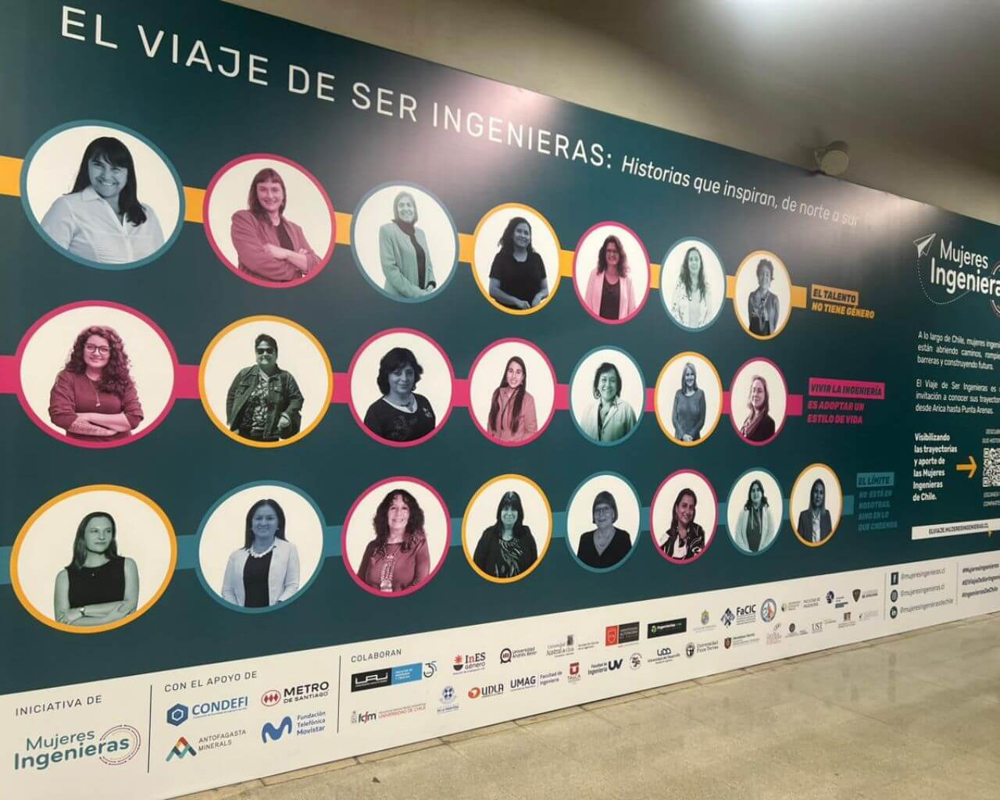
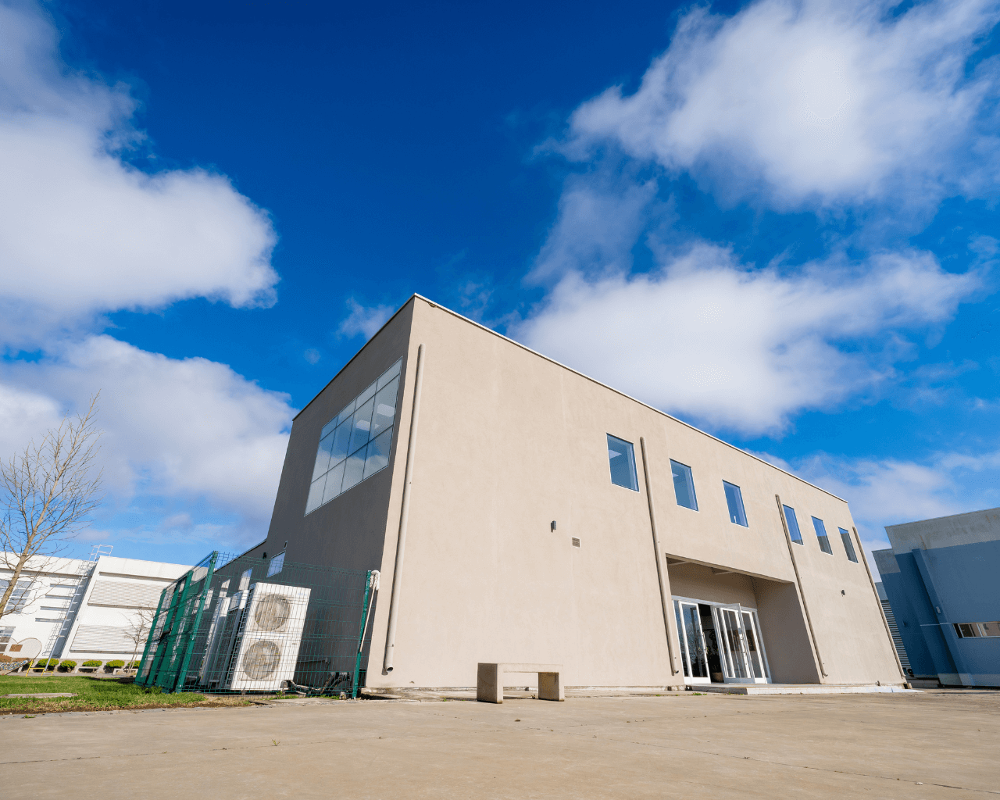

Martes 24: Elección de representantes para el Consejo Universitario
Hoy está habilitada la urna digital para recibir los votos que definirán a las y los representantes de la comunidad utalina en el órgano que reemplazará al actual Consejo Académico.
Publicado por Utalca
Decana fue reconocida como “Ingeniera destacada” en libro conmemorativo
Hoy está habilitada la urna digital para recibir los votos que definirán a las y los representantes de la comunidad utalina en el órgano que reemplazará al actual Consejo Académico.
Autor: Yanet Díaz Castillo | 24 Junio 2025